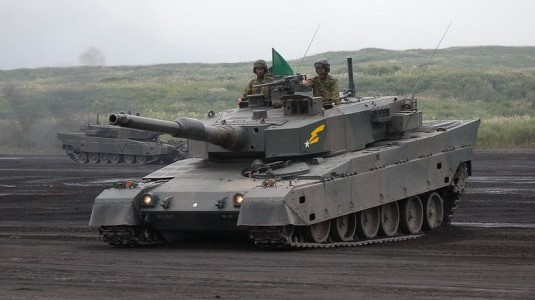
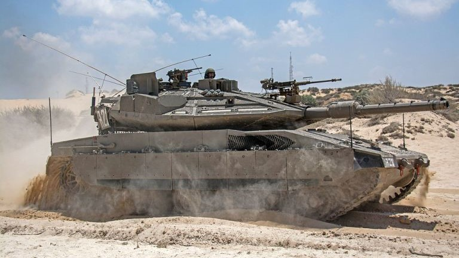
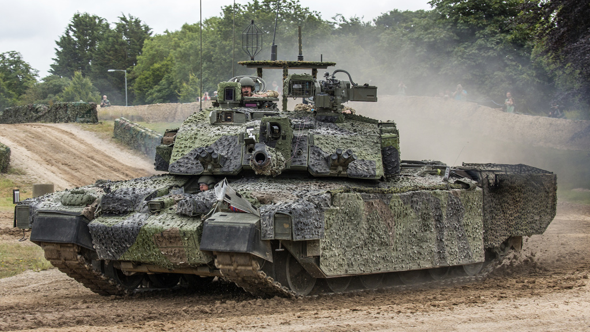

TK-X Hidropneumatikus munkahengereinek méretezéseMivel a tank munkahengerei hatalmas igénybevételnek vannak kitéve ellenben magas fokú flexibilitással kell rendelkezniük a különféle felfüggesztés poziciók (a harckocsi akár "le is tud térdelni") végrehajtásához, ez egy különösen nehéz feladat volt. |  |
Merkava Mk 4 görgőrendszerének rezonancia minimalizálásaA tank prototípús magas fokú rázkódással kűzködött, amelyet mint utólag kiderült, a tömegeloszlás precíz figyelembevétele nélkül összehangolt lengéscsillapítók okoztak. |  |
Challanger 2 motorra kapcsolt görgöinek méretezéseA prototípus hátó görgőinél rendszeres törések és elhajlások jelentkeztek, melyet az elégtelen nagyságú görgőátmérő okozott. |  |